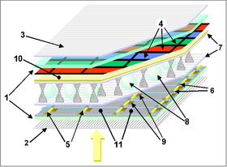
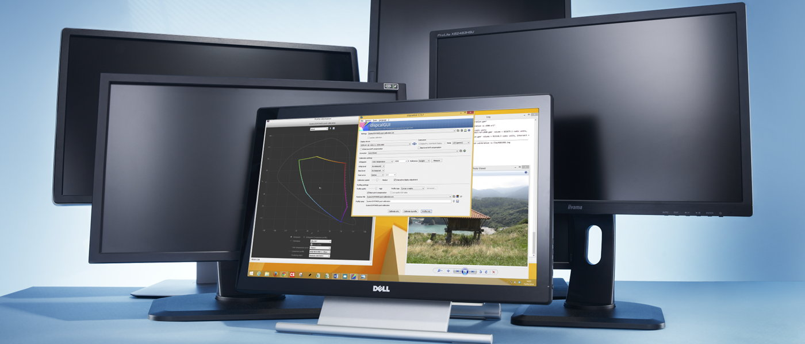
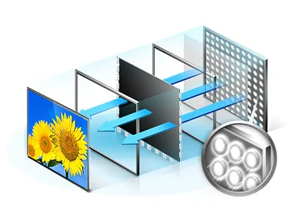
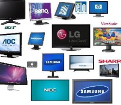

Trabajo Perifericos SINF: Monitor TFT
Esta es mi web para el trabajo de Sistemas Informáticos del 1er Trimestre de 1ºDAM 2019/2020.
El trabajo consiste en reunir información sobre los Monitores TFT y realizar una web responsive
donde exponer la información recabada.
En este trabajo tocaré estos temas entre otros.

Estructura TFT

Tipos de Paneles

Funcionamiento
